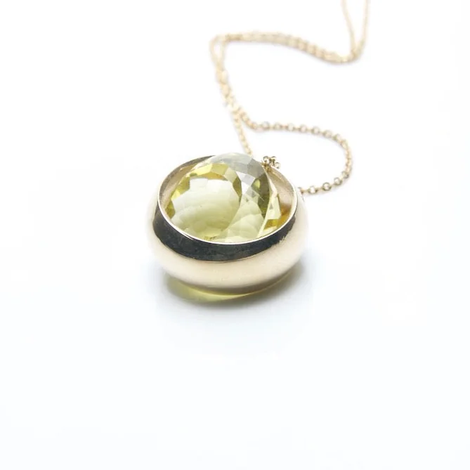

The stone is never fixed
Laus
Laus is Icelandic for loose, and it means exactly that. The stone sits unfixed in its setting and rolls with every movement of the hand. Fourteen carat gold or sterling silver, quartz, rubies and zircon.
from €87for example: Laus Yellow Gold & Quartz